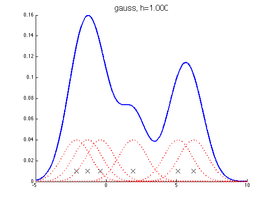
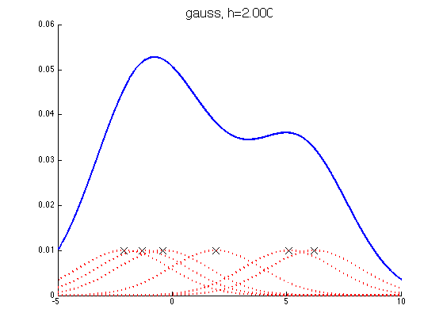
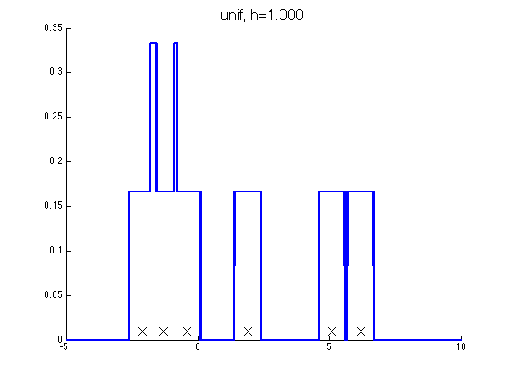

Demonstrate a non-parametric (parzen) density estimator in 1D
Contents
function parzenWindowDemo
setSeed(2);
data = [-2.1 -1.3 -0.4 1.9 5.1 6.2]';
f = @(x) 0;
n = numel(data);
domain = -5:0.001:10;
kernels = {'gauss', 'unif'};
for kk=1:2
kernel = kernels{kk};
switch kernel
case 'gauss', hvals = [1, 2];
case 'unif', hvals = [1, 2];
end
for i=1:numel(hvals)
h = hvals(i);
figure;
hold on
handle=plot(data, 0.01*ones(1,n), 'x', 'markersize', 14);
set(handle,'markersize',14,'color','k');
g = kernelize(h, kernel, data);
plot(domain,g(domain'),'-b','LineWidth',2.5);
if strcmp(kernel, 'gauss')
for j=1:n
k = @(x) (1/h)*gaussProb(x,data(j),h^2);
plot(domain, 0.1*k(domain'), ':r', 'linewidth', 2);
end
end
title(sprintf('%s, h=%5.3f', kernel, h), 'fontsize', 16);
printPmtkFigure(sprintf('parzen-%s-%d', kernel, h));
end
end
end
function [data, f] = generateData
mix = [0.35,0.65];
sigma = [0.015,0.01];
mu = [0.25,0.75];
n = 50;
The true function, we are trying to recover
f = @(x)mix(1)*gaussProb(x, mu(1), sigma(1)) + mix(2)*gaussProb(x, mu(2), sigma(2));
model1 = struct('mu', mu(1), 'Sigma', sigma(1));
model2 = struct('mu', mu(2), 'Sigma', sigma(2));
pdf1 = @(n)gaussSample(model1, n);
pdf2 = @(n)gaussSample(model2, n);
data = rand(n,1);
nmix1 = data <= mix(1);
data(nmix1) = pdf1(sum(nmix1));
data(~nmix1) = pdf2(sum(~nmix1));
end
function g = kernelize(h,kernel,data)
n = size(data,1);
g = @(x)0;
for i=1:n
switch kernel
case 'gauss', g = @(x)g(x) + (1/(h*n))*gaussProb(x,data(i),h^2);
case 'unif', g = @(x)g(x) + (1/(h*n))*unifpdf(x,data(i)-h/2, data(i)+h/2);
end
end
end
function setupFig(h)
figure;
hold on;
axis([0,1,0,5]);
set(gca,'XTick',0:0.5:1,'YTick',[0,5],'box','on','FontSize',16);
title(['h = ',num2str(h)]);
scrsz = get(0,'ScreenSize');
left = 20; right = 20;
lower = 50; upper = 125;
width = scrsz(3)-left-right;
height = (scrsz(4)-lower-upper)/3;
set(gcf,'Position',[left,scrsz(4)/2,width, height]);
end
  